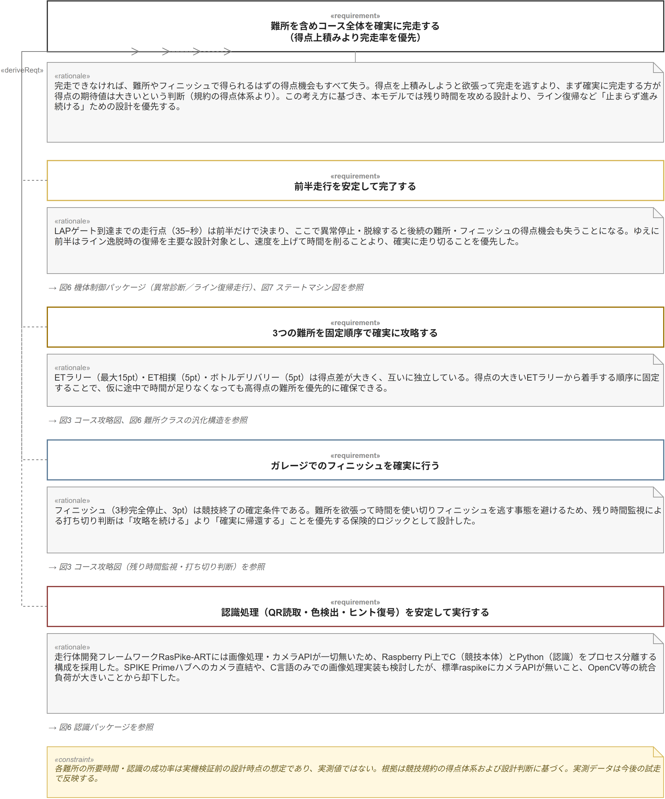
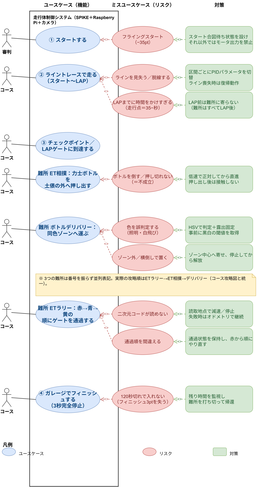
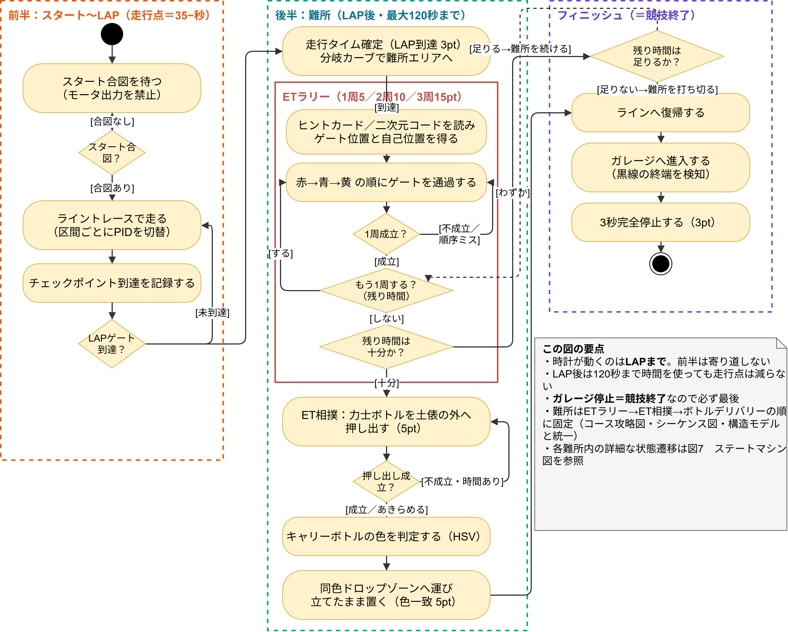
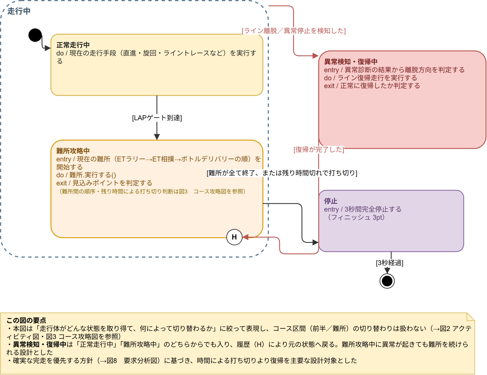
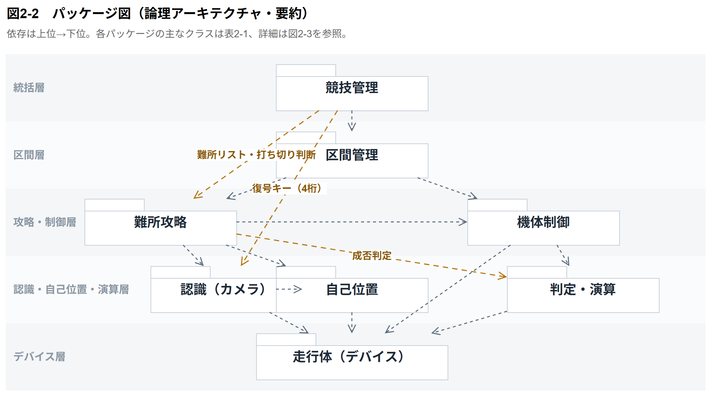
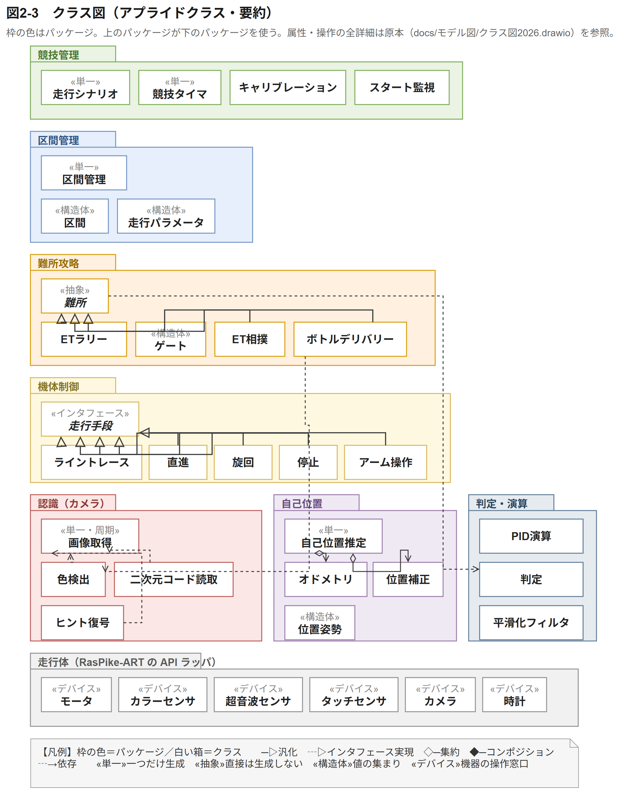
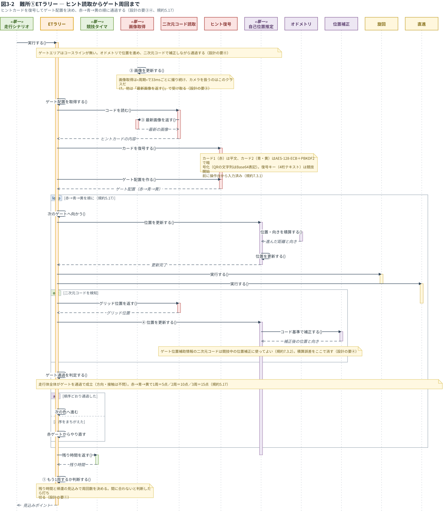

第13回 モデル図とは
ETロボコンでは、プログラムを走らせた点数と同じくらい、設計図（モデル）の審査が大事です。この回は、モデル図がどういうもので、どんな種類があるかを、2026年のチームが実際に描いた図を見ながら知ります。
用意するもの：なし（図を見ながら話を聞く回です）
説明
モデル図は何のためにあるか
プログラムを書く前に、何を作るか、どう作るかを決めておく必要があります。それを文章で書くと長くなって、人によって読み方も変わってしまいます。そこで、決まった書き方の図で表します。この決まった書き方が UML（と、それを広げた SysML）です。
図にしておくと、チームの中で「何を作るか」をそろえられます。作りながら考えが変わったら、図を直してからプログラムを直します。ETロボコンでは、この図を審査員が読んで、考え方が筋が通っているかを見ます。
審査員が特に見るのは「なぜそうしたのか」です。何を作ったかだけでなく、なぜその作り方を選んだのかを図に書きます。
図の種類
2026年のチームが描いた図を、「なぜ・何を」から「どう作るか」の順に見ていきます。図は docs/モデル図/drawio/ に draw.io のファイルで入っています。
要求の図（何をいちばん大事にするか）

いちばん上に「コース全体を確実に完走する」という要求を置いて、そこから下の要求を導いています。要求ごとに「理由」（rationale）が付いています。なぜそう決めたかを書くのが、審査でいちばん見られる所です。
ユースケース図（走行体が何をするか、何が困るか）

青の楕円が、走行体がすること（ユースケース）です。赤の楕円が、起きると困ること（ミスユースケース）、緑の四角がその対策です。人の形は、外から関わるもの（審判、コース）です。
困ることと対策を並べておくと、設計の考えが一目で伝わります。対策はそのままプログラムの機能になります。たとえば「ラインを見失ったら復帰動作をする」は、src/control/line_recovery.c になっています。
アクティビティ図（どの順番で進むか）

黒丸が始まり、角の丸い四角が動作、ひし形が分かれ道、二重丸が終わりです。分かれ道から出る線には [条件] を書きます。
状態機械図（どんな状態があって、何で切り替わるか）

角の丸い四角が状態、矢印が切り替わりで、矢印には [条件] を書きます。状態の中の entry / はその状態に入ったときに1回すること、do / はその状態にいる間ずっとすることです。
第8回でやったように、状態は enum、切り替わりは switch の中の if になります。状態機械図が描ければ、プログラムの骨組みはほぼできたも同じです。次の回で自分の状態機械図を描きます。
パッケージ図（プログラムをどう分けるか）

第9回で見た src/ のフォルダの分け方を図にしたものです。上ほど全体を仕切る部品、下ほど機械に近い部品で、矢印（使う関係）は上から下へだけ向けます。図のパッケージの名前とフォルダの名前を1対1にしておくと、モデルとプログラムが合っているかすぐ確かめられます。
クラス図（部品とつながり）

四角が部品（クラス）で、名前・持っている値・できることの3段で書きます。C にはクラスがないので、構造体と、その構造体を受け取る関数で作ります。ひし形の付いた線は「持っている」、白い三角の付いた線は「〜の一種」です。第9回の関数ポインタの表は、この「〜の一種」を C で書いたものです。
シーケンス図（部品どうしがどの順でやり取りするか）

横に部品を並べて、上から下へ時間が進みます。矢印が「頼む」、点線が「返事」です。関数の引数や戻り値を決めるときに使います。
2026年の反省
2026年のチームは、8月に提出したモデルと、10月の実際のプログラムがずれてしまいました。難所を回る順番を変えた、ライントレースをカラーセンサではなくカメラ中心にした、ETラリーのゲートの位置が固定ではなかった、などです。
ずれること自体は悪くありません。作ってみて分かることはたくさんあります。ずれたら、モデルを直してからプログラムを直す（少なくとも一緒に直す）ことが大事です。決めたことは docs/設計/判断記録.md に日付と理由を書いておくと、モデルを直すときの材料になります。
もう一つの反省は、審査で見られる範囲を外したことです。これは第15回で話します。
手順
docs/モデル図/drawio/の中のファイルを、VS Code で開く（第2回で入れた Draw.io Integration があれば、そのまま図として開ける）- 上の図を1つずつ開いて、説明と見比べる
- 図の中の名前（状態の名前、パッケージの名前）が、
src/のどこに出てくるか探す
演習
演習13-1 図とプログラムをつなぐ
ユースケース図の緑の四角（対策）を1つ選んで、それがプログラムのどこで作られているかを探してください。見つからなかったら、それも答えです（図にはあるのに作っていない）。
演習13-2 図を読む
状態機械図を見て、「異常検知」の状態に入るのはどんなときか、そこからどこへ戻るのかを、文章で説明してください。
演習13-3 自分のシミュレータなら
第12回で作った自分のシミュレータのプログラムについて、ユースケース図に描くとしたら、ユースケースとミスユースケースをそれぞれ3つずつ挙げてください。
次回までに
draw.io を使えるようにしておいてください（VS Code の Draw.io Integration か、ブラウザの https://app.diagrams.net ）。